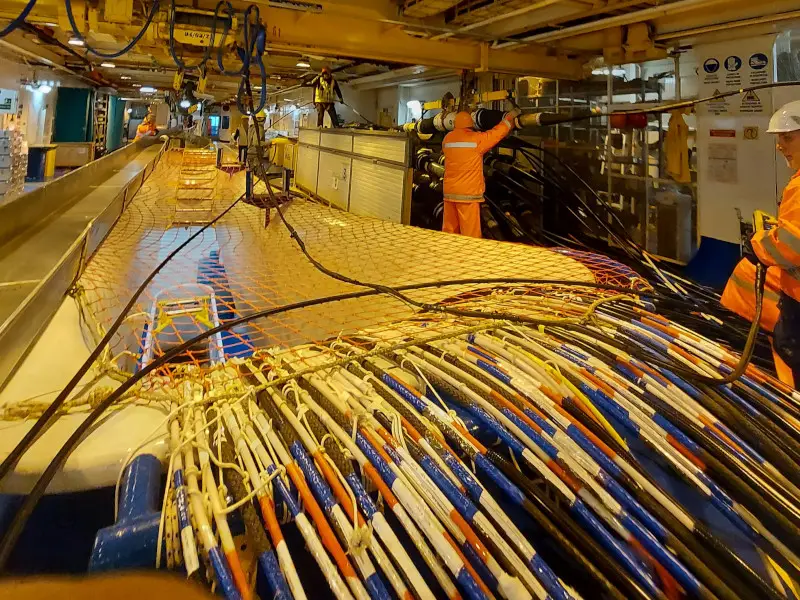
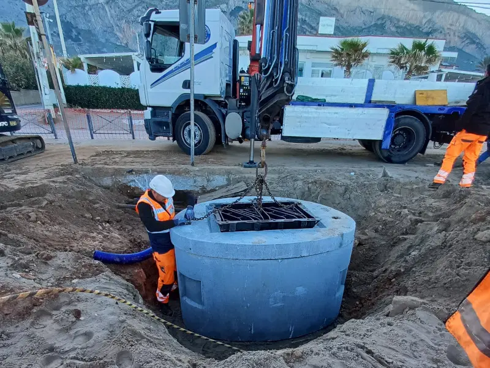

Deepcable is founded and operated by an experienced submarine fiber optic jointer and transmission & test engineer, with over 10 years of hands-on expertise across offshore and onshore projects worldwide. We provide specialized engineering services aligned with the standards and expectations of large-scale submarine cable systems.
Specialized freelance engineering services in submarine cable installation and maintenance for optical fiber networks. Supporting offshore projects globally with technical expertise and hands-on experience in marine operations.

Engineering and consulting services for shore-end submarine cable systems. Supporting onshore operations with technical expertise, site supervision, and network testing to ensure smooth project delivery worldwide.
